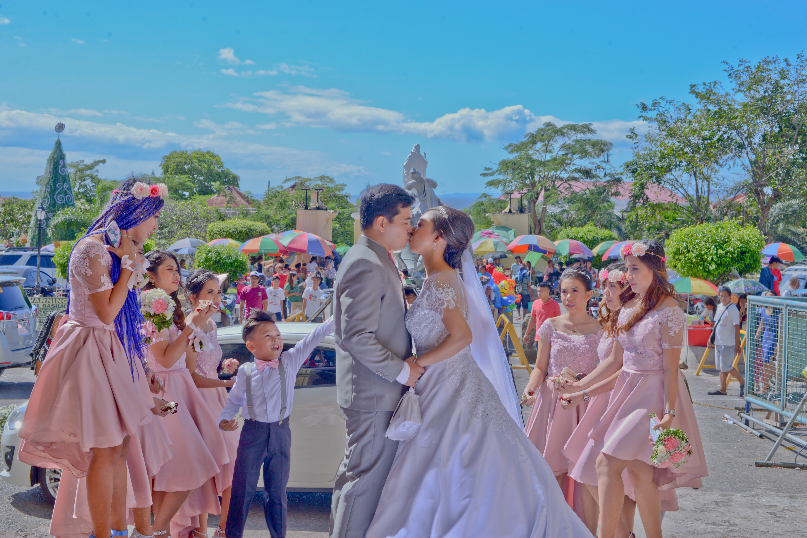

It usually takes around 10 minutes to get to the church, but we left almost an hour early just to be safe.
As we get closer and closer to Taal Basilica, the traffic is getting heavier. Time went by and we were stuck a couple of blocks away from the church.
I decided to walk the rest of the way to make sure we get there on time. Once we got there, coordinators were already panicking looking for me as we are about to begin. I walked straight towards the altar and the ceremony started.
The Ceremony
As the music played, our parents and sponsors started walking down the aisle.
And then it was her turn. I couldn't see her face clearly through the veil but I know it's her and I'm sure she's the most beautiful bride in this world.
Rev Father Dakila, lead the most touching ceremony as we exchanged vows in front of God with our family and friends as our witnesses.
 "Mabuhay ang bagong kasal!"